EXPLORE
Move through colorful 3D worlds and discover different ways to reach your goals.
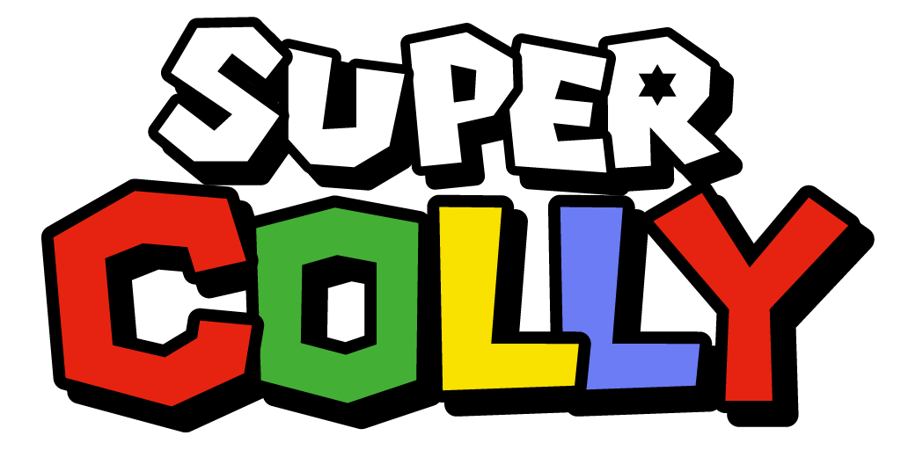
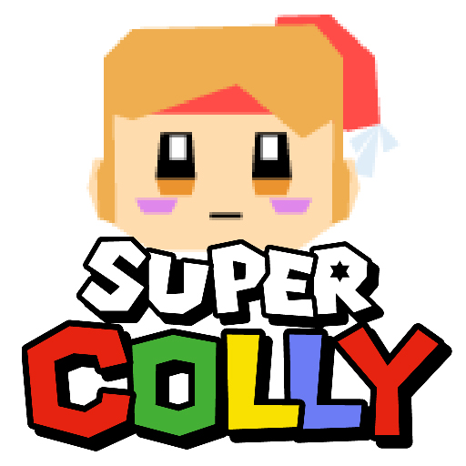
THE GAME
走る。跳ぶ。探す。
自分だけのルートを見つける。SUPER COLLYは、3Dアクションそのものを楽しむゲームです。
Move through colorful 3D worlds and discover different ways to reach your goals.
Movement, jumps and momentum are at the heart of the experience.
Find Noas and other collectibles hidden throughout each stage.
Replay stages, improve your routes and enjoy fast, skillful play.
MADE FOR TODAY
SUPER COLLY (スーパーコリー) is an indie 3D action platformer inspired by the free exploration and playful movement of classic N64-era 3D games.
WORLD OF COLLY
色とりどりのステージを、自由に走り回ろう。
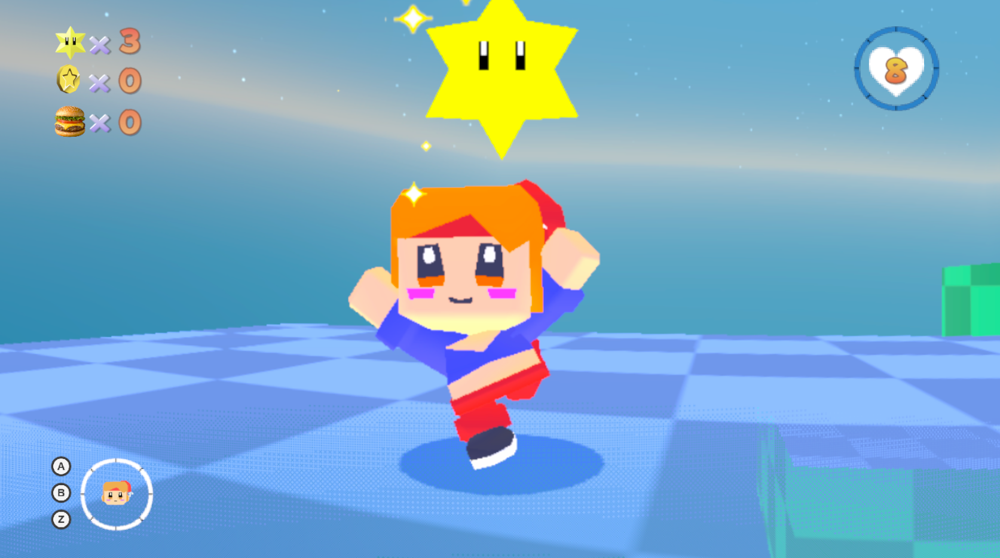
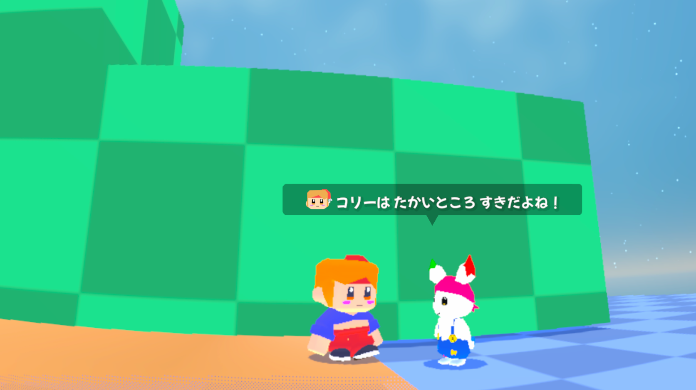
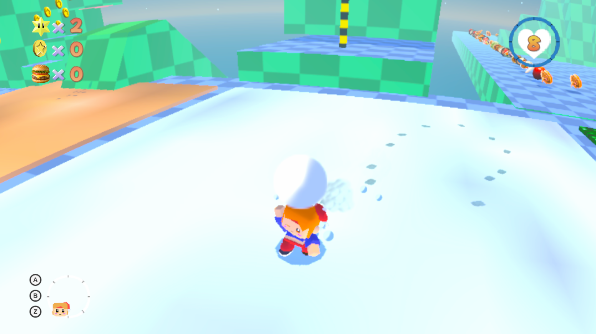
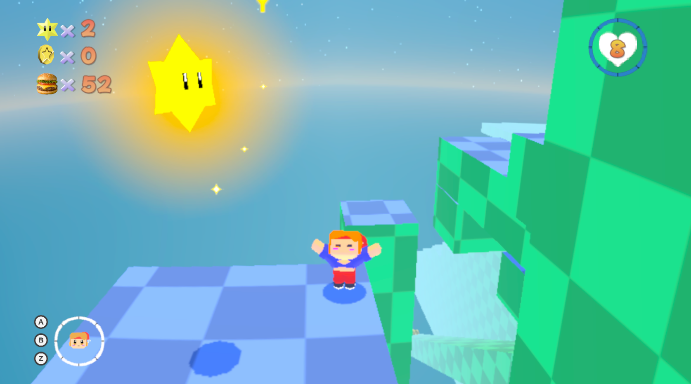
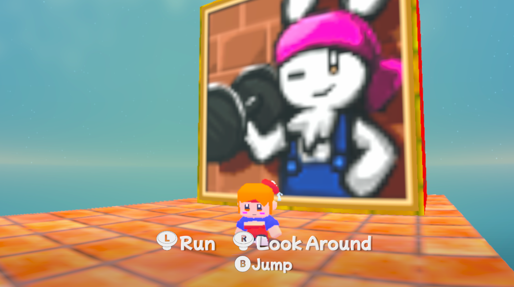
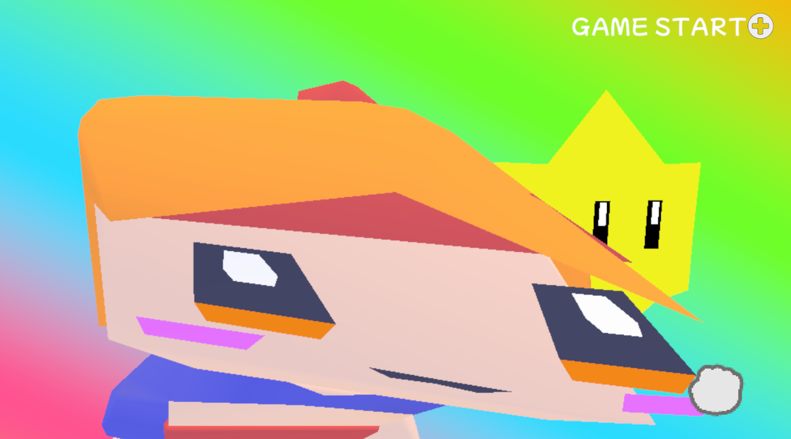
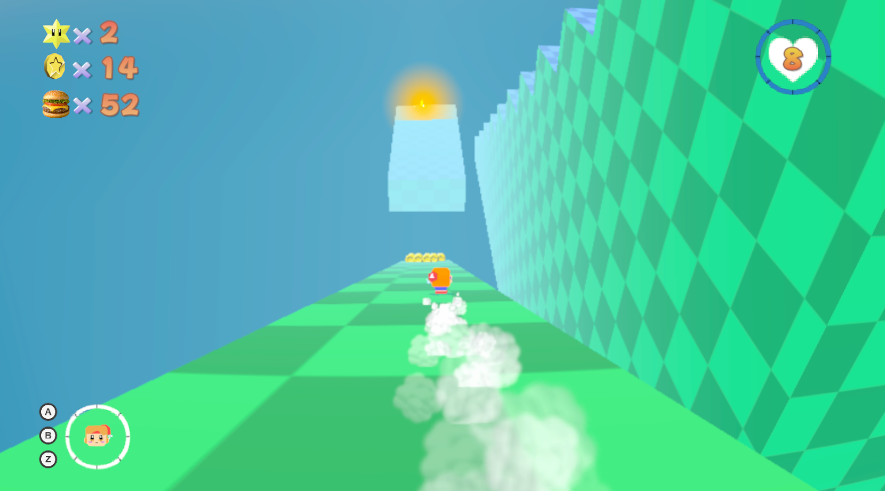
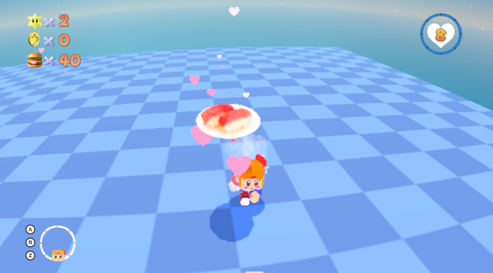
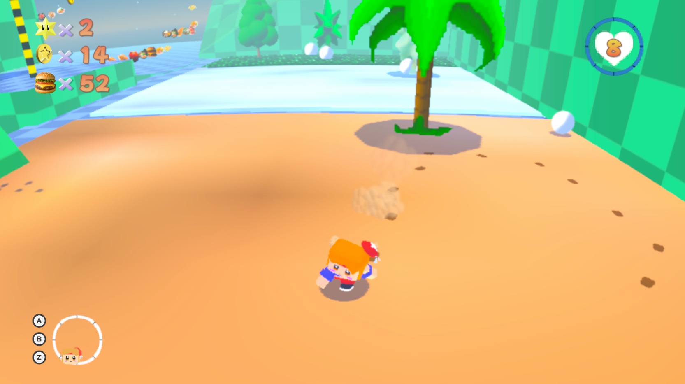
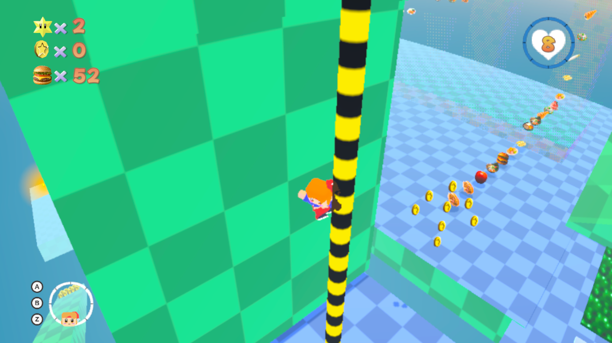
WHY SUPER COLLY
1996. One thing was born that year: me. Another was Super Mario 64.
Super Mario 64 changed what 3D games could be.
Running freely through open stages. Climbing higher. Jumping farther. Finding your own way. Even after all these years, that kind of play still feels special.
That is why I wanted to take another look at the fun of classic 3D action with SUPER COLLY.
This is not an attempt to recreate an old game. I looked at what those creators achieved and asked myself: What kind of 3D action game would I make today?
The answer became SUPER COLLY.
I was born in 1996. I want to challenge a game born in 1996.
Thirty years later, this is my answer to the creators who inspired me.
“This is the kind of 3D action game I made.”
1996年。ひとつは、僕が生まれた年。そしてもうひとつは、『スーパーマリオ64』が生まれた年です。
『スーパーマリオ64』は、3Dゲームという表現そのものを大きく変えたゲームでした。
広いステージを自由に走り、高いところへ登り、遠くへジャンプし、自分で道を見つけていく。30年近く経った今でも、その遊びには強い魅力があります。
だからこそ、SUPER COLLYでは、そんなクラシックな3Dアクションの面白さに、もう一度向き合いたいと思いました。
これは、昔のゲームをそのまま再現するためのゲームではありません。当時のクリエイターたちが作ったものを見て、「今の自分なら、どんな3Dアクションを作るだろう？」そう考えながら、自分なりの答えを作っています。
SUPER COLLYを作る一番大きな理由は、もっとシンプルです。
1996年に生まれた自分が、1996年に生まれたゲームに挑戦してみたい。
30年後の自分から、あの頃のゲームクリエイターたちへ。
「自分は、こういう3Dアクションを作りました。」
PLAY / FOLLOW
SUPER COLLY（スーパーコリー）は、クラシックなN64時代の3Dゲームや3Dマリオ、3Dアクションプラットフォーマーから影響を受けたインディーゲームです。3Dプラットフォーマー、アクションゲーム、探索、ジャンプ、ステージ攻略、コレクション、ゲーム開発、Unity開発に関する情報を掲載しています。